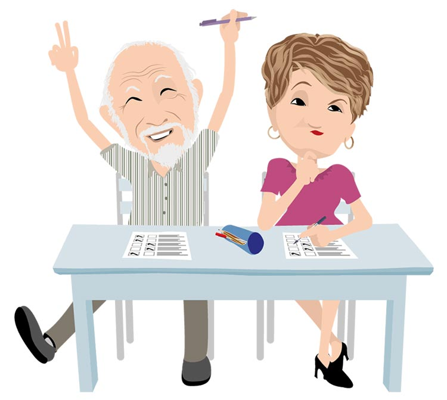
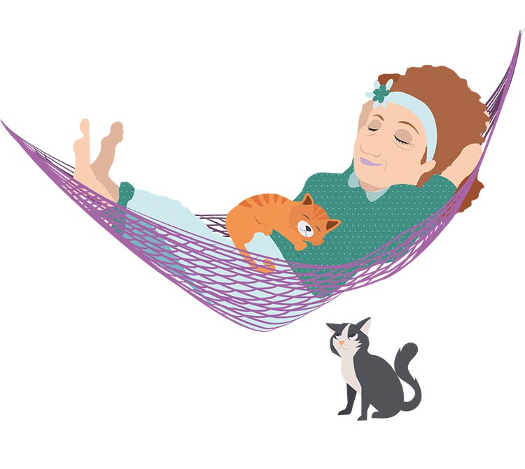

Vous avez plus de 55 ans ? Vous souhaitez préserver votre capital santé et votre qualité de vie ? L’ASEPT Limousin vous propose un large choix d’activités accessibles à tous, GRATUITEMENT, quel que soit votre régime de retraite. Les seniors sont de plus en plus nombreux dans notre société et l’espérance de vie ne cesse d’augmenter.
Aujourd’hui la retraite est vécue comme une deuxième vie qu’il convient de mener dans un état de bien-être physique, mentale et social. C’est parce que nos comportements peuvent permettre d’améliorer ou d’entretenir le capital santé que l’ASEPT du Limousin propose aux seniors vivant à domicile, un parcours de prévention des risques liés au vieillissement.
La mise en place d’actions de prévention est une réponse pour améliorer l’espérance de vie sans incapacité. Il s’agit de permettre à chaque participant de :
- S'informer sur les clés du bien vieillir et de mieux gérer leur santé
- Acquérir des connaissances et des compétences pour prévenir les troubles liés au vieillissement.
- Favoriser la modification de leurs comportements et prévenir ainsi les maladies cardio-vasculaires, les chutes, l’ostéoporose, la démence et les risques du mésusage et de la non observance des médicaments, l’obésité.
- Informations et échanges avec un professionnel de santé autour des clés du bien vieillir.
- En savoir +
Des conférences-débats
- Animées par des professionnels, elles abordent différents thèmes de prévention (alimentation, accidents domestiques, santé et conduite…).
- En savoir +
Des réunions de prévention
- Des ateliers thématiques animés par des professionnels
- En savoir +
Des ateliers thématiques
- Pièce de théâtre : Qu'est-ce qu'on attend pour être vieux? ET Théâtre-Forum : Points d'appui - Situation aidant/aidé
- En savoir +
Des actions Théâtre
Agendas Séniors à domicile
Les ateliers Séniors ASEPT Limousin

Ateliers Vitalité

Ateliers Mémoire Peps Eurêka

Objectif physique et équilibre

Atelier Nutrition Santé Séniors
Ateliers Nutri Activ

Santé vous bien au volant

Ateliers Vers un habitat facile à vivre

Atelier CAP Bien-être

Atelier Préservons-nous

Atelier Sommeil
Bienvenue à la retraite
Ateliers autonomie numérique
Ateliers en ligne